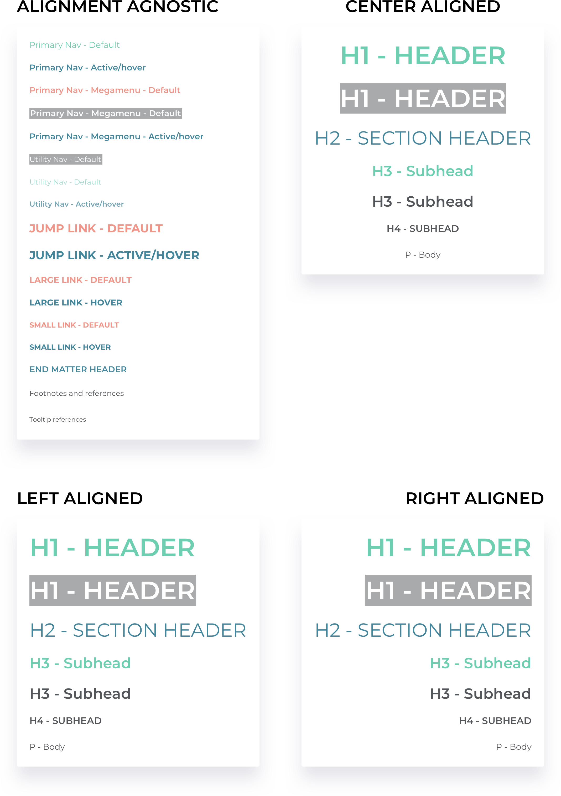
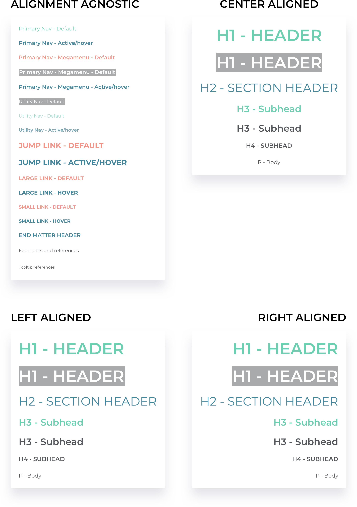

Overview
At Evoke Giant, a health-focused advertising and strategic branding agency located in San Francisco, I helped create a design system that could be used as a jumping off point for digital projects. This system consists of the most common components used in digital healthcare, allowing the creative teams at Giant to focus their efforts on bringing their clients’ brands to life visually without the need to reinvent many of the universal elements found across the digital landscape.

Problem
Evoke Giant was looking for guidance in best practices when designing for digital projects (specifically websites, banner ads, and email blasts) to ensure industry standard design solutions were being utilized. It would allow their art teams to focus their energy on creative concepting and bringing their client’s brands to life without the need to worry about usability heuristics and web design standards.
Solution
I created what I’ve called the Giant Design System — or GDS. It’s a library of the most common design components used in healthcare websites assembled using Brad Frost’s Atomic Design Methodology that are reusable across many of the digital projects at Evoke Giant. It’s designed in such a way that allows the agency’s art teams to mix and match the elements they need to come up with new creative solutions for their client’s digital problems. Each component can be visually personalized to meet the client’s brand needs, while the underlying functionality stays the same.

Team and Role
- Lead designer — myself
- Director of UX — Gail Cruz
- UX strategist — Emily Schepp
- VP of technology — Andrew Wint
- Front end development team — Tony Le and John Vihikite
Research
I completed an analysis of design elements currently used in pharmaceutical and medical device websites, emails, and banner ads, both those done by Evoke Giant, as well as brands worked on by competitor agencies, to establish list of components to include in the Giant Design System. I also worked closely with our UX Strategist and Director of UX to focus the list of components needed for the initial launch of GDS.
Components
I completed an analysis of design elements currently used in pharmaceutical and medical device websites, emails, and banner ads, both those done by Evoke Giant, as well as brands worked on by competitor agencies, to establish list of components to include in the Giant Design System. I also worked closely with our UX Strategist and Director of UX to focus the list of components needed for the initial launch of GDS.
Typography
I established a typographic heirarchy for the GDS that could be used across any project. It provides an example of appropriate type sizing, agnostic of typeface, font weight, and case.
 

Color
I created a color palette to be used for the GDS that expands upon Evoke Giant’s corporate colors. It’s meant to serve as an example for color selection and will obviously be replaced by a client’s own brand colors.
Page Elements
The beauty of the Giant Design System is its modular nature. In true atomic design fashion, each element can combined with other elements to create full page designs.